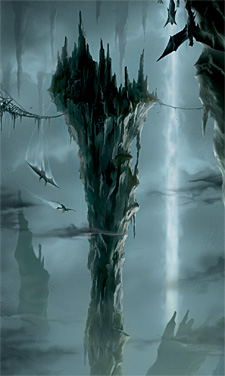

 Karda Nui is also known as the Universe Core. It is the ultimate power source for the Matoran Universe, meaning it provides light and energy which is sent to the city of Metru Nui to be distributed throughout the universe.
Appearance-wise Karda Nui is an entirely enclosed dome. The walls of the massive cave are impermeable. The bottom of the cave consists of a vast swamp, the water of which being a mixture of liquid protodermis and saltwater.
Fierce storms are constant and alwayd raging within the chamber, which is why no structures can be built. However, some parts of the area are inhabited by Av-Matoran.